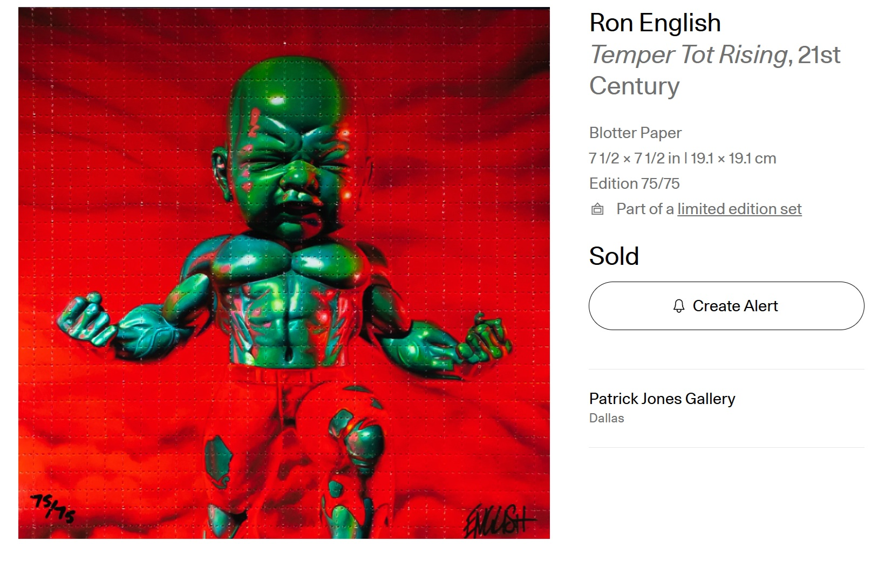

Notes
This composition was later adapted by the artist as Temper Tot Rising, a blotter-paper edition measuring 7 1/2 × 7 1/2 inches (19.1 × 19.1 cm), issued as edition 75/75 and described on Artsy as part of a limited edition set.
The image is also documented in trading-card material.
Ancillary Documentation

